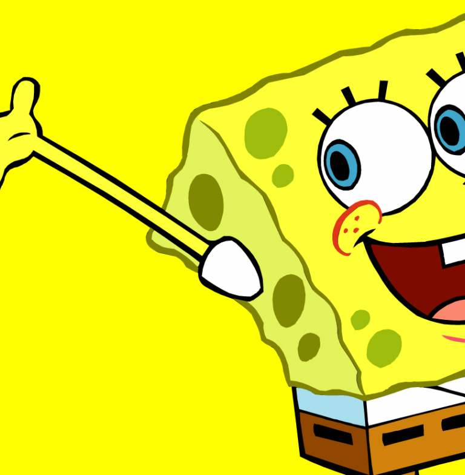
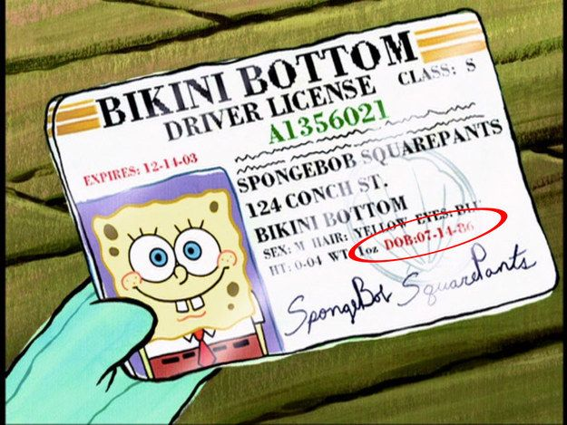

!niet klikken! Hallo allemaal, ik heet jullie allemaal van harte welcome op deze legendarische spongebob website! In deze website kan je veel informatie vinden over spongebob's leven die misschien wel goed van pas kunnen komen als je bijvoorbeeld een presentatie over spongebob moet geven. In ieder geval wil ik u als lezer bedanken voor het bezoeken van mijn website! Hiernaast aan de linker kant kunnen jullie in het menu vinden wat hier allemaal te vinden is. Ik zou zeggen, blijf even hangen en geniet ervan!
(oja, ook leuk om te weten is dat deze website is gemaakt door een student op het Emmauscollege Rotterdam, genaamd Jakin Abraha. Ik denk dat hij het geweldig zou vinden als u als lezer voor deze website een hoge rating zou kunnen achterlaten. Misschien in de vorm van een soort Magister cijfer? Wie weet...)
leuke feitjes!

We kennen allemaal wel onze goeie vriend, Patrick Ster. Patrick word door de meeste mensen gezien als de domste karakter uit de serie. Maar wist je dat Patric zo dom is, omdat zeesterren in de zee helemaal geen hersens hebben!
in 1 van de Spongebob Squarpants afleveringen is het na veel vallen en opstaan, Spongebob eindelijk gelukt om zijn vaarbeweis te halen. Hierin zien we echter dat spongebob al 34 jaar oud is! Hij is geboren op 14 juli 1986. (Ook is het leuk om op te merken dat Spongebob wel degelijk haar heeft, geel haar!)